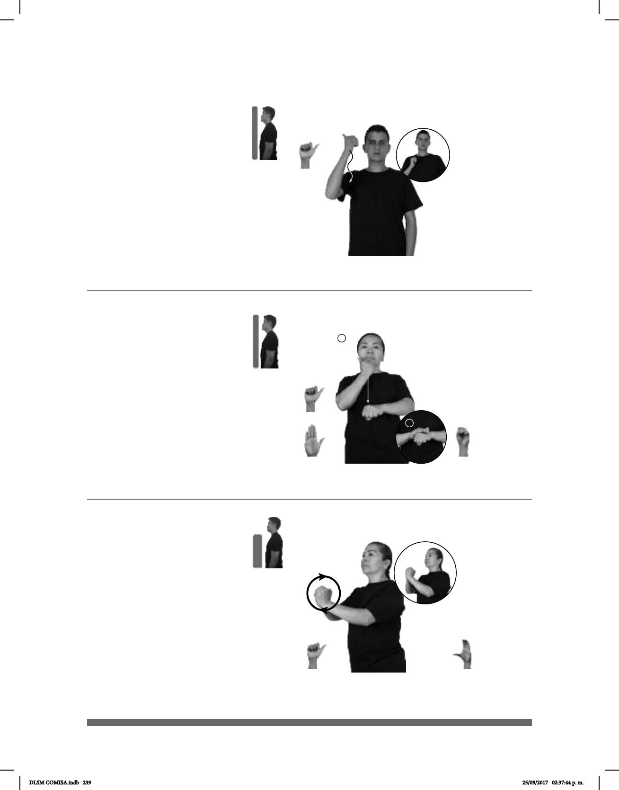

239
(A-19)
ADÁN PRIMER HOMBRE MUNDO DIOS HACER
Adán es el primer hombre creado por Dios en el mundo.
1
2
1
2
(A-20)
ADMINISTRACIÓN DELEGACIÓN pro-ELLOS IR
Ellos fueron a la administración de la delegación.
Adorar (A-21)
DIOS pro-NOSOTROS ADORAR
Nosotros adoramos a Dios.
Seña: SM
A.1
Palma hacia la
izquierda.
De la cabeza al
hombro del lado derecho.
La mano sigue una
trayectoria ondulada.
Primer hombre creado
por Dios sobre la Tierra.
La seña se usa en la
comunidad sorda mormona.
Seña: SB
MD seña que pasa de
A.1 a B.-P.2, MB S.1
MD la palma inicia hacia
adentro y termina hacia abajo. MB
palma hacia abajo.
MD de la barbilla a la MB.
MB a la altura del pecho.
MD recto.
1. sust. f. Organización y
manejo de una institución como las
o se relaciona con ella.
Seña: SB
MD A.1, MB C.3
MD palma hacia la
izquierda, MB palma hacia la derecha.
A la altura del pecho. MD
sobre MB cubriendo sus dedos.
MD y MB siguen una
trayectoria de movimientos circulares
hacia el frente.
v. tr. Reverenciar o
rendir culto a un ser que se considera de
naturaleza divina.
La seña se usa en la
comunidad sorda cristiana y mormona.
DLSM COMISA.indb 239 25/09/2017 02:37:44 p. m.